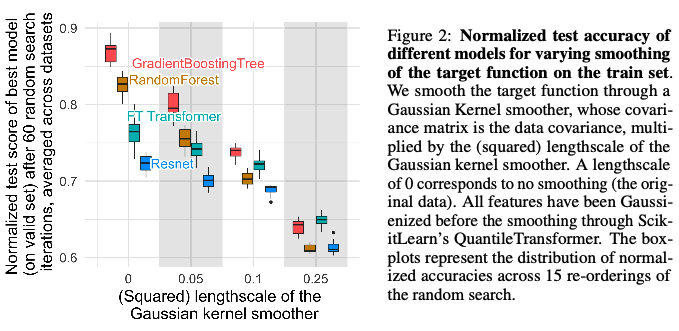
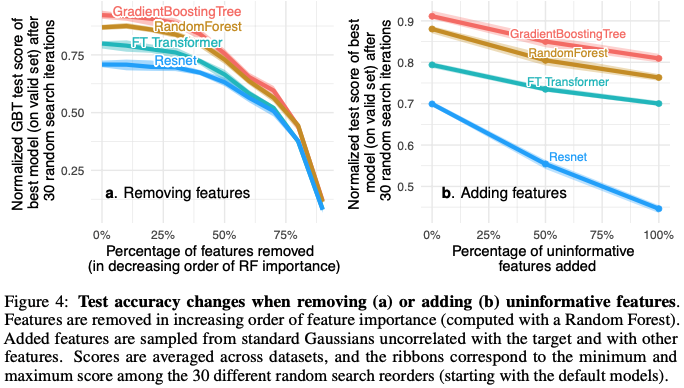

Why this paper?
This paper piqued my interest because it is a topic that I commonly grapple with. While deep learning techniques are highly publicized for superior performance on image and language data, many practical machine learning (ML) applications rely on tabular data. As an ML practitioner, there is a desire to use cutting edge techniques if they make sense for the data and application. This paper addresses the outstanding question, “Does deep learning outperform tree-based models on tabular data?” In order to answer this question, several shortcomings that have hindered a direct comparison of these modeling techniques on tabular data were addressed. They also compare the inductive biases of deep learning vs tree-based models to help further the development of tabular-based deep-learning architectures
Methods
Benchmark creation
One of the major contributions of this paper is a set of 45 tabular benchmarks used in this study and to be used in the future. The lack of standard and consistent tabular benchmarks was identified by the authors as one of the main reasons tabular studies aren’t reproducible. They fill this gap by making their tabular datasets available through the OpenML platform. This is a major advancement compared to the referenced literature that provides comparisons on 3 and 11 selected tabular datasets.
For a dataset to be included as a benchmark, it must meet the following criteria:
- Heterogenous columns- each feature is different in nature (not the same signal with a different sensor).
- Not high dimensional- number of dimensions (d) less than 500; d/n (number of observations) less than 1/10.
- No undocumented datasets- removed if little information available.
- I.I.D. data – no time series or stream-like data.
- Real-world data- no artificial datasets with the exception of simulated data of practical importance.
- Not too small- no datasets with less than 4 features or less than 3k samples.
- Not too easy- remove dataset if a simple model (single tree or regression) scores within 5% of a default Resnet or HistGradientBoosting model.
- Not deterministic- remove dataset if the target is a deterministic function of the data (simulated games).
In addition to the strict criteria above, the authors also removed “side issues” for practical purposes. Five side issues were removed by applying the following rules:
- Medium-sized training set- data too large was truncated to 10k samples
- No missing data- remove all missing data by column first and then row.
- Balanced classes- binarized data if there is more than 1 class and under sampled to retained equal samples of the top two frequency classes.
- Low cardinality categorical features- remove categorical features with more than 20 items.
- High cardinality numerical features- remove numerical features with less than 10 unique values and convert to categorical if there are 2 categories.
Data preprocessing was minimal after the removal of side issues and benchmark criteria was met. All models that don’t directly include categorial features used ScikitLearn’s OneHotEncoder on categorical features. Regression targets were log-transformed when skewed. All features for neural network training were transformed using ScikitLearn’s QuantileTransformer.
Model selection
The authors compare 3 tree-based and 4 deep learning models. For tree-based methods the authors chose all ScikitLearn ensemble models: RandomForest, GradientBoostingTrees (or HistGradientBoostingTrees for datasets with categorical features), and XGBoost. For deep learning, they chose Multi-layer perceptron (MLP), Resent, FT_transformer (simple transformer with embedding for categorical and numerical features), and SAINT (transformer model with inter-sample attention).
Model tuning and selection
The authors make an effort to tune both deep learning models and tree-based models in a comparable way for each dataset and model using predefined hyperparameter grids and a random search of roughly 400 iterations in Hyperopt-Sklearn. These hyperparameter searches were saved and used as a bank to study performance as a function of the number of random searches. Each number of random searches was repeated 15 times per model and benchmark to asses variance in model performance. For each search the best hyperparameters of the validation set were chosen and evaluated on the test data. Each dataset was divided such that 70% was used for training, 9% for validation, and 21% for test.
Aggregating results across datasets
The classification datasets were assessed using test accuracy and regression datasets were assessed using the R-squared score. To aggregate results across benchmarks, the average distance to the minimum was used to “normalize scores” between the best model, 1, and worst model, 0. However, the worst model was replaced with the test score of 10% quantile for classification and 50% quantile for regression. All negative values were reset to 0. This procedure of model tuning and selection, bootstrapping (15 times per model and benchmark), and aggregating across benchmarks was repeated several times to answer the original question and investigate each inductive biases.
Results
Model performance was analyzed separately for classification and regression tasks (Figure 1). Furthermore, the benchmarks were subdivided into those that only had numerical features and those that had numerical plus categorical features. The normalized test accuracy of 16 classification datasets with only numerical features revealed that XGBoost, GradientBoostingTrees, and RandomForest had higher normalized accuracy than the 4 deep learning models for all number of random searches. The results were also similar for the 19 regression datasets with only numerical features except that the SAINT model outperformed GradientBoostingTrees only for a low numbers of random searches (less than 10). XGBoost was the top performing model for all random search iterations for both classification and regression tasks with only numerical features. For the numerical plus categorical features HistGradientBoostingTree was added. HistGradientBoostingTree is the top-performing model when random search iterations are low (less than 10 for classification and less than 14 for regression) and XGBoost is the superior model for high search iterations. All tree-based methods outperform all deep learning methods for classification and for regression when the number of searches is more than 10.

The authors came to two big conclusions from this work:
- Hyperparameter tuning of deep learning models did not improve their performance to be better than tree-based methods
- Deep learning methods were not hindered by the inclusion of categorical features.
Empirical investigation: why do tree-based models outperform deep learning on tabular data?
The authors aim to understand the inductive biases or “inherent properties of these models which explain their superior performance on tabular data.” The tree-based models with superior performance are bagging and boosting algorithms that are based on ensembles of decision trees. Therefore, this section focuses on understanding why decision trees explain tabular data well. In this section, hypotheses were tested by applying a treatment to the input data and measuring average normalized test performance.
First, smoothing transformations were applied to the target features of the tabular classification datasets. This was done by applying a Gaussian kernel smoothing function stretched across different scales. The normalized test accuracy was compared across 15 iterations of 60 hyperparameter searches for four kernels. The four models compared had different performance when no smoothing is applied (Figure 2). However, when smoothing is applied the tree-based models (RandomForest and GradientBoostingTree) are more sensitive to the degree of smoothing. This shows that tree-based methods fit better to irregular functions than neural networks. This is consistent with studies in the literature that show that neural networks perform well on smooth functions.

Second, the number of non-informative features was varied in two experiments, one removing non-informative features (Figure 4a) and one adding non-informative features (Figure 4b). Removing non-informative features reduced the performance gap between tree-based and deep learning models. Next, uninformative features sampled from standard Gaussians distribution were added to each datasets. The additional of uninformative features decreased the normalized test score of MLPs (Resnet) much more than GradientBoostingTrees and RandomForest. This shows that tree-based methods are less affected by uninformative features.

Third, tree-based methods and transformers are not rotationally invariant. MLPs are rotationally invariant. The logic here wasn’t quite adequately explained but we followed the main idea. Which is that it is harder for rotationally invariant algorithms to remove uninformative features because the invariant algorithm needs to identify the orientation and then select the least informative. To test this theory, the authors randomly rotated the training datasets and computed the normalized test accuracy for the original dataset (no rotation) and with rotation. The rotation had no effect on the test performance for Resent. Furthermore, model performance with no rotation in order of highest to lowest was GradinetBoostingTree, RandomForest, FT Transformer and Resnet. With the rotation, the order was completely reversed. This indicates that rotational invariance is not a desirable property for models trained using tabular data.
In the end the authors use these three inductive biases as a way to recommend how to improve neural network architecture for tabular data. They conclude that a neural network architecture must be robust to uninformative features, preserve the orientation of the data, and learn sharp irregular shaped functions to perform well on tabular data. The authors acknowledge many limitations to their current approach. Most of these have to do with the criteria for benchmark create and the side issues that were removed.
Discussion
In general we found this paper very interesting and thought provoking. We thought the authors made a good effort to create a new set of tabular benchmark datasets. However, we spent a lot of time talking about the benchmark criteria and how this could bias the results presented here. We found the maximum datasets size and number of features to be very restrictive such that it doesn’t include many of the datasets used in our work. These numbers felt like magic since there wasn’t any discussion of why or how the numbers were chosen. The benchmark criteria also removed datasets that were “too easy”. We thought that this action could bias the results because smoother target functions may be removed in this step. This could impact the first inductive bias that most target functions are irregular and captured by better by tree-based models. Neural networks are better at picking out smooth functions but these datasets may have been removed from the tabular benchmarks during creation. We also felt that removal of missing data and imbalanced class ratios was an oversimplification as these issues are common in real-world datasets. In general, even though benchmarks are termed “typical tabular datasets” in the title, we felt the restrictive criteria and removal of side issues likely created more homogenous tabular datasets than naturally occur.
The shaded regions around the average lines were difficult to understand. During our discussion it took us a long time to decipher how these were calculated. We finally came to realize that these regions were calculated from the 15 repeat draws per random search size, model, and benchmark. These 15 draws were used to aggregate across benchmarks 15 times to calculate 15 normalized test scores. The min and the max of these 15 scores are shown by the shaded area. This is to give an idea of how much variation the random hyperparameter values contribute the results. We felt that these results may be misleading for high random search values. That is because bootstrapping from a fixed bank results in decreasing variance as search size increases. This effect is visible in Figure 1. This procedure is important to understand as it was used throughout the paper in all figures with variance shown as boxplots or shaded regions.
The authors highlight that this study is one of the first to have a similar level of hyperparameter tuning for both tree-based and deep learning models. From this, they concluded that hyperparameter tuning of deep-learning models did not improve performance beyond tree-based methods. However, this conclusion is solely based on the number of hyperparameter searches. We noticed that authors did not address details like different size hyperparameter grids for the models (or model types) and compute time to fit a model to one hyperparameter set. We would have been interested to see some discussion of these factors that are known to differ for tree-based and deep learning models. Furthermore, neural networks might perform better on larger datasets with an increased tuning budget.
We liked the idea of analyzing inductive biases, however we found most of the conclusions seemed fairly obvious. Two of the three inductive biases seemed to be known properties of tabular data, which is that it is rotationally invariant by nature and has irregular target functions. The last bias is a known advantage of tree-based methods, which is the ability to perform well amongst many non-informative features. However, we appreciated the rigorous and creative methods used to test each bias.